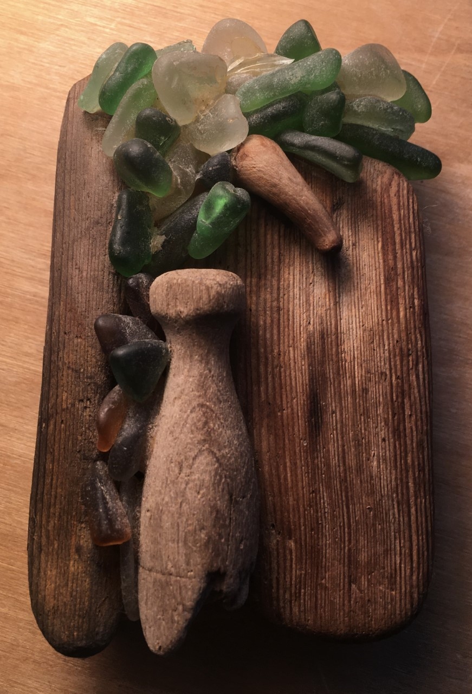

CCRC's Lockdown Cookbook
UNSW Climate Change Research Centre Lockdown Recipes
Marian's Käsekuchen (Cheese Cake)
Preparation time: 15 minutes; Cooking time: 50 minutes
Submitted by: Katrin Meissner
Background
Marian was a friend of my parents. She lived in a house in the dunes in Denmark and made art from anything she could find on the beach. She was an amazingly creative woman with a great sense of humour. She spoke several languages, had many children, and, unfortunately, a very sad childhood. She spent years in a concentration camp as an adolescent and lost her family during the Holocaust. This is the recipe for her cheese cake. I love making it, it's fast, easy, super yummy, and it reminds me of my childhood summers in the dunes of Denmark. You will need Quark for this recipe, which can be hard to find in Sydney. Harris Farms or Maloneys usually have it in stock (look in the refrigerated area, near cottage cheese and yoghurts).
A small piece of art Marian gave me when I was a teenager
Ingredients
- 125g butter
- 125g sugar
- 4 eggs
- 200g Quark (40% fat if possible, see story above if you are unsure what this is)
- 2 tablespoons flour
- 1 teaspoon baking powder
- 1 teaspoon vanilla sugar (or a bit of vanilla extract)
- 1 organic lemon: 2 tablespoons of lemon juice, zest of the whole thing
Instructions
-
Beat the butter and sugar until foamy. Add egg yolks and mix it all together. Add the Quark, flour, baking powder, vanilla, lemon juice and zest (and mix). Beat the egg whites and add carefully to the mixture. Fill all in a round springform pan with baking paper. Bake for 50 minutes in preheated oven at 150 degrees Celsius. Once done, turn oven off, open the door a bit and let the cake cool down slowly (otherwise it will sink together and you end up with a very flat cake).